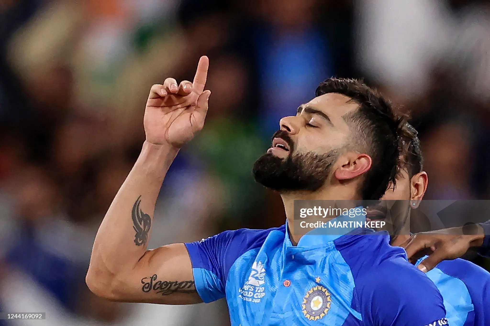

CANON 01 // THE MIRACLE AT THE 'G
82*
(53) NOT OUT
vs Pakistan
“The night Melbourne stopped breathing.”
A mathematical impossibility turned into sacred scripture. 28 required off 8 deliveries. Two towering, physics-defying sixes straight down the ground against sheer pace into the Melbourne twilight.